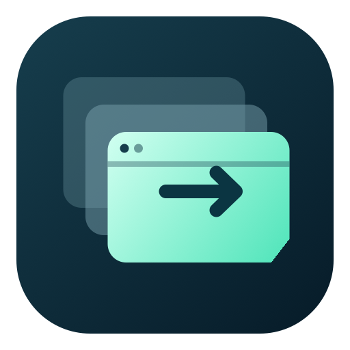
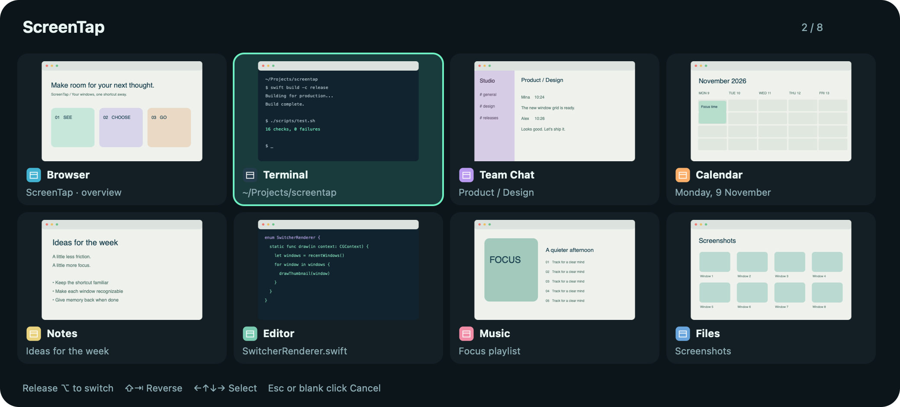

⌥ 누르기
Option을 누른 채 Tab을 누르면 열린 창을 한눈에 볼 수 있습니다.

ScreenTap.이름을 읽기 전에, 화면으로 알아보세요.
익숙한 ⌥Tab에 창 미리보기를 더한 가벼운 Mac 창 전환기.
무료 · Apple Silicon · macOS 14+ · v0.2.0

같은 앱의 여러 창도, 각각 보여줍니다.
방금 쓰던 창부터 왼쪽 위에 차례로.
Option을 누른 채 Tab을 누르면 열린 창을 한눈에 볼 수 있습니다.
Tab으로 다음 창을, Shift-Tab으로 이전 창을 고르세요. 방향키와 클릭도 됩니다.
Option을 놓으면 선택한 창으로 전환합니다. 취소하려면 Esc나 여백을 클릭하세요.
작게 캡처하고, 필요한 만큼만 보관합니다. 전환기가 닫히면 미리보기 캐시를 비웁니다. 대기 중에는 화면을 계속 캡처하지 않습니다.
메모리 설계 살펴보기 ↗썸네일 캐시 최대 용량
썸네일 최대 픽셀 크기
전환기 종료 후 썸네일 캐시
캐시 한도는 앱 전체 메모리 한도가 아닙니다. 초기 0.1.1 빌드의 실측은 마지막 캡처 시점 134.8MiB, 종료 후 43.1MiB였습니다(macOS 26.6, 12개 창). 환경과 사용 상태에 따라 달라지며, 0.2.0의 성능 보증 수치가 아닙니다.
설정은 필요한 두 가지 권한만. 앱과 사이트 모두 한국어와 영어를 지원합니다.
ZIP을 풀어 ScreenTap.app을 응용 프로그램 폴더로 옮긴 다음 실행하세요.
시스템 설정 → 개인정보 보호 및 보안에서 ‘손쉬운 사용’과 ‘화면 및 시스템 오디오 녹음’을 허용하세요. 오디오는 캡처하지 않습니다.
같은 단축키를 사용하는 다른 앱은 종료하거나 단축키를 바꿔 주세요.
네. MIT 라이선스로 공개합니다. 저작권·라이선스 고지를 유지하면 수정하고 재배포할 수 있습니다. 저작권 표기는 peses0326에게 유지됩니다.
현재 개인용 배포 빌드는 Apple의 Developer ID 서명·공증을 받지 않았습니다. 공개 소스와 배포 파일을 확인한 뒤 macOS의 ‘개인정보 보호 및 보안’ 안내에 따라 직접 열거나 소스에서 빌드할 수 있습니다.
아닙니다. AltTab에서 영감을 받아 별도로 작성한 앱입니다. AltTab의 모든 설정과 예외 처리를 구현한 것은 아닙니다. 검색이나 전체 크기 미리보기 대신 작은 창 미리보기와 전환에 집중합니다.